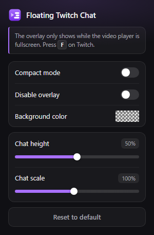

Floating Twitch Chat
Chat keeps running
while you stay fullscreen
Drag it anywhere on the player. Height, scale and background colour live in the popup.

Garu1f: no way he actually hit that
stardust_dragon: chat in fullscreen

DeceitfulPear: clip it

Cyberwire69:

Allmostdone: been waiting for this one
tooclosebutfar: W overlay
Goofycatcher: gg
reckH_: chat without alt+tab
live